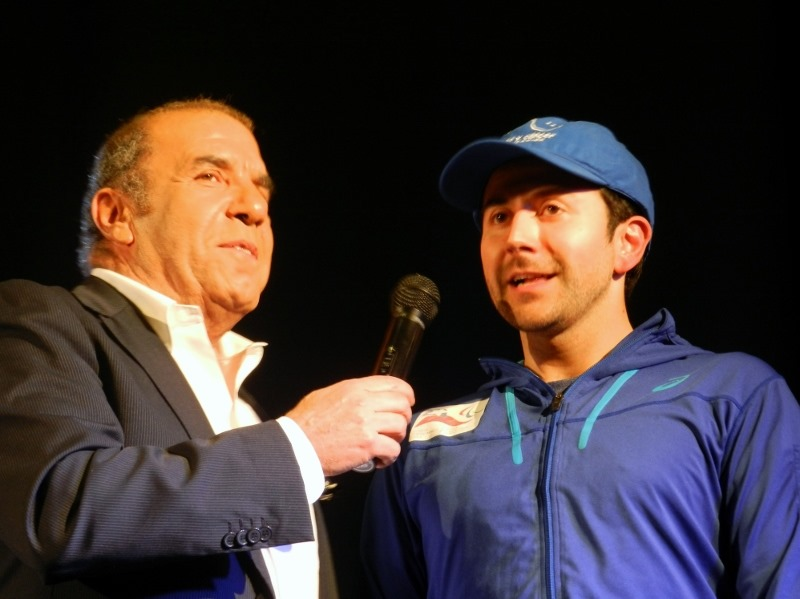
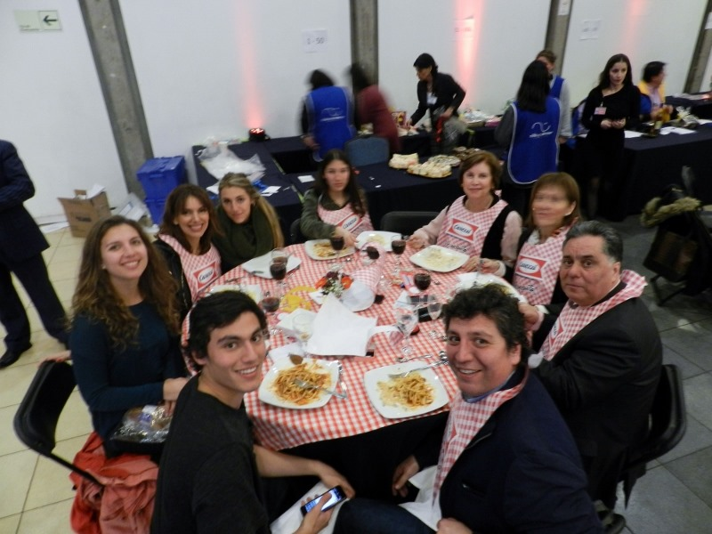
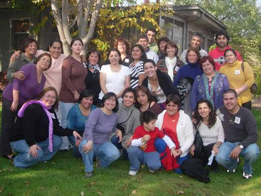
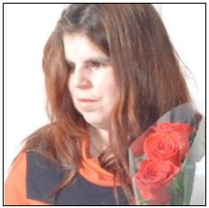

dd/mm/aaaa
Finalizó proceso de postulación a Becas de Estudio 2018
El objetivo de este proyecto es beneficiar a jóvenes recuperados de cáncer con becas
académicas, para lograr la continuidad de estudios pendientes y obtener una profesión
futura y reinserción en la sociedad.
Las becas podrán atender a los jóvenes con estudios universitarios, técnicos
profesionales o de centros de formación técnica. Así también podrán tener alcances
parciales y en ocasiones especiales, totales.
El año 2018 se otorgaron un total de 28 becas de las cuales 15 corresponden alumnos
antiguos y 13 son para alumnos que inician sus estudios superiores este año 2018.
Para que estas becas sean bien utilizadas, sean objetivas y sean supervisadas, elaboramos
requisitos básicos y similares a los utilizados en el resto de las instituciones que
entregan estos beneficios.
VER INSTRUCTIVO DE POSTULACIÓN 2018 (formato PDF)
Para mayor información o en caso de cualquier duda, consultar a:
Carolina Escudero P.
Asistente del Directorio
Fundación Niño y Cáncer
fundacion@ninoycancer.cl
Fono: 22170821- 22170820
dd/mm/aaaa
Tallarinata de amor y sonrisas - Una noche de sonrisas, amor y generosidad
Una noche de música, sorpresas y generosidad
Con gran éxito se desarrolló nuestra Tallarinata de Amor y Sonrisas el 30 de agosto
en el Estadio del Banco Central.
La velada estuvo animada por nuestro amigo y permanente colaborador Checho Hirane, además
de contar con la extraordinaria presentación de Andrea Tessa y otros artistas invitados.

Agradecemos a todos los asistentes que compartieron, donaron dinero y tiempo a esta noble
causa, cuyo principal objetivo es entregar una vida más llevadera a los con cáncer
atendidos a en los hospitales públicos de nuestro país.

Empresas y colaboradores especiales que realizaron donaciones y regalos que hicieron
posible llevar a cabo este evento:
Estadio del Banco Central, Antofagasta Minerals S.A., Nahmias Desarrollo Inmobiliario,
A3D Chile, Radisson Blu, CCU, Falabella, Agencia One Stop, Aerolínea Sky, Trendy,
Ópticas GMO, Rotter y Kraus, Therapy Boutique, Doc Popcorn, Tienda Ditego,
Carola González - Boutique, Baños del Corazón, Paris Alto Las Condes, Hotel Presidente,
Mario Moure - Perfumes, L’Oréal, Interdessign, Farmacias Knop, Tamango, Cocina de Javier,
Pastelería Las Hermanas, Tiendas Corona, Laboratorio Valma, Ellus, Iregua, Hotel Regal Pacific,
Hotel Kennedy, Textiles Lanabel, Cinemark, Hotel Plaza San Francisco, Coco Legrand,
La Fête, Viña Cousiño Macul, Tutte Matute, Donde Gilberto, Mister Jack, Bow Spa,
La Rambla, Stefan Joyero, Salón Mauricio Jiranek, Mery Satt, Laboratorio Prater, Lounge,
AB Küpfer Pisos, Hotel Frutillar, Ti-5, Óptica Tabancura, Boutique R4, Alonso Olive Oil,
AHF joyas.
Y especiales agradecimientos a los voluntarios, socios, directorio, amigos y todos los
que de una u otra menera se involucraron para hacer posible el éxito de nuestra
Tallarinata de Amor y Sonrisas.

dd/mm/aaaa
Montaña de la Alegría 2017 - Realización del Taller de Ski
Proyecto recreativo y psicoterapéutico que se realiza desde el año 2002.
Se traduce en "Una Terapia para el Alma"
Se realizó como todos los años en Portillo del 21 al 25 de agosto y contó con la
participación de 7 jóvenes chilenos, 2 ecuatorianos y 1 de España. Todos amputados de
una extremidad inferior, como secuela de su enfermedad.

El objetivo de este Programa es demostrar a los participantes, que su impedimento físico
no los limita para plantearse y superar desafíos, tales como el aprender a esquiar y que
con optimismo y fuerza lograrán todos los objetivos que se propongan en su vida.
El coordinador responsable y voluntario de la FNyC es Patricio Morandé, instructor de ski,
que también sufrió una amputación producto del cáncer siendo muy joven. Participó en las
Olimpiadas para Discapacitados organizadas en Salt Lake City (EE.UU.) el año 2002, en la
que obtuvo el puesto N°11.
Fueron acompañados durante los 5 días que permanecieron en Portillo, por la Voluntaria
de la FNyC y sonrisóloga Susana Alegría, Psicóloga.

La Fundación Niño y Cáncer cubrió todos los gastos: alojamiento, alimentación,
instructores de ski, traslados, equipos especiales y vestimenta adecuada (ropa térmica,
antiparras, cascos, guantes, botas, entre otros).
Nuestros agradecimientos especiales a:
Hotel Portillo, que facilitó equipos y tickets de andarivel.
Buses Cabrera, por el traslado a los participantes a Portillo.
Hotel Radisson-La Dehesa, por el alojamiento de todos los participantes el 20 de agosto y a su regreso el 25 de agosto.
Escuela de Montaña de Portillo, ya que sin su apoyo no habría sido posible realizar el Taller de Ski – 2017.

dd/mm/aaaa
Carta de agradecimiento a nuestros socios y colaboradores
Fundación Niño y Cáncer agradece sinceramente a empresas, socios, particulares,
colegios y a cada uno de ustedes por su valiosa colaboración prestada durante el periodo 2016.
Para la tarea que nuestra Fundación realiza, el aporte que ustedes han realizado,
significa la posibilidad de dar continuidad a nuestros proyectos en beneficios de los
niños que son afectados de una enfermedad altamente impactante, como es el cáncer.
Sepan que las ayudas por ustedes proporcionadas se destinó al financiamiento de Becas
de Estudios Superiores, Departamentos de Acogida, Mejoramiento de las instalaciones
hospitalarias, actividades recreativas, entre otras actividades que la Fundación realiza
permanentemente.
Deseamos que este año 2017 sea un excelente año para ustedes y para sus familias y les
motivamos, para que esta relación que hemos establecido, continúe creciendo y multiplicándose.
dd/mm/aaaa
Conozca los requisitos para postular a nuestros departamentos de acogida
VER REQUISITOS DE POSTULACIÓN
dd/mm/aaaa
Agradecimientos del grupo de familias "Aprendiendo a revivir"
En el año 2009, comenzamos a realizar reuniones trimestrales con los padres cuyos hijos
habían fallecido a causa del cáncer infantil; al principio fue muy dificil, no sabíamos
muy bien que ibamos a hacer, ni como lo ibamos a llevar a cabo. Al mes de noviembre del
2014, hemos realizado 18 encuentros, donde en un principio solo participaban las madres.
Hoy son familias, las que participan de cada encuentro, el grupo decidió llamarse
"Aprendiendo a revivir", cada reunión a sido un éxito, porque cada miembro de la familia,
a encontrado su espacio, donde poder hablar y expresar cada una de sus emociones, sin
temor a ser juzgado, donde encuentran un lugar y un tiempo de dedicación exclusiva para
conversar con otra madre, otro padre, otro abuelo(a) que vivio la misma experiencia que
ella o él, donde pueden conversar con otra persona que "Sí les entiende", que "Sí tiene
derecho a decirle: Yo sí te entiendo, porque a mí también se me murio un hijo".
Solo tenemos palabras de agradecimiento para cada uno de ustedes, y para Fundación Niño
y Cáncer, porque sin su ayuda, muchos padres habrían quedado sin la posibilidad de
participar de estas reuniones,simplemente porque no cuentan con los medios económicos
para trasladarse entre cuidades, hasta el lugar de la reunión.

Primer encuentro, realizado en Santiago en mayo de 2009.
 Encuentro realizado el sábado 15 de noviembre 2014, en la Serena.
Encuentro realizado el sábado 15 de noviembre 2014, en la Serena.
Un abrazo, y nuestra gratitud.
Equipo organizador "Aprendiendo a revivir":
Myrna Aedo, Dama de verde
Susana Alegría, Sonrisóloga
Eugenia Ahumada, Psicóloga
Violeta Cádiz, Psicologa
Carola Garabano, Sonrisóloga
Inés Ibaceta, Dama de verde
Paula Inostroza, COAYUDA
Ximena Mazuela, Kinesióloga
Josefina Morales, Enfermera
Georgina Moreno, Voluntaria
Chery Palma, Enfermera
Ariel Parra, Quimico farmacéutico
Natalie Rodriguez, Médico
Fanny Sepúlveda, Enfermera.
dd/mm/aaaa
Ex paciente publica su libro: "Con tu apoyo, yo le gano al cáncer"
¡Hola! Mi nombre es Marlene Zavala, tuve retinoblastoma bilateral, ya hace muchos años.
Por esta razón realicé mi proyecto de título sobre el cáncer infantil, para de alguna
forma apoyar a los niños que se encuentran atravesando por la enfermedad con un pequeño
grano de arena para ellos y sus familias, para de esta forma devolver la mano y agradecer
a todos los que estuvieron a mi lado.

Haga clic aquí para descargar el libro en formato PDF.